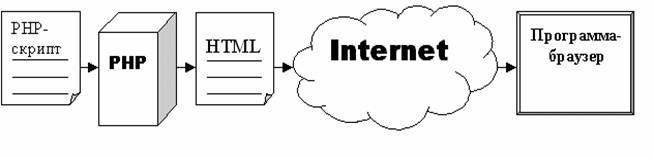

Лабораторная работа N 2
Основные конструкции языка PHP
0. Краткие сведения о PHP и о запуске программ
1. Вывод данных на экран и взаимодействие PHP с HTML
2. Переменные
3. Типы данных
4. Операторы и выражения
5. Константы
6. Условные операторы
7. Циклы
8. Функции
9. Массивы
Что такое РНР?
РНР
— это язык программирования, который давно уже перерос свое название. Дело в
том, что первоначально это был просто набор макросов, предназначенных для
создания несложных личных web-страниц, и название РНР — не более чем аббревиатура
от слов Personal Home Page (личная
домашняя страница). Но со временем набор макросов превратился в полноценный
язык программирования, с помощью которого можно создавать развитые web-узлы,
обменивающиеся информацией с современными базами данных.

Рисунок 1
В
отличие от обычного HTML-текста web-страницы, программа на РНР не передается
браузеру, но обрабатывается препроцессором РНР или его модулями (рисунок 1).
Фрагменты HTML-текста при этом остаются без изменений, а операторы РНР
выполняются и результат их обработки вставляется в HTML-текст, после чего все
вместе передается браузеру. Программа на РНР может делать запрос к базе данных,
создавать графические изображения, читать и записывать файлы, общаться с
внешними серверами, то есть возможности такой программы практически не
ограничены.
Как запускать PHP-программы:
1. На созданном после установки сервера диске Z: в директории Z:\home\localhost\www\ создаем рабочую директорию, например /work-php/
2. Заносим в нее предназначенные для запуска файлы (разумеется, в рабочей директории допустимо создание поддиректорий)
3. Запускаем файлы, набрав в командной строке Вашего просмотрщика Internet Explorer путь к файлу (начинающийся как http://localhost/work-php/) и нажав "Enter" (не забудьте при этом убедиться в том, что сервер запущен!)
4. Если вы внесли какие-то изменения в скрипт, то прежде чем его выполнять, нажмите кнопку "Обновить" в просмотрщике.
1. Вывод данных на экран и взаимодействие PHP с HTML
Рассмотрим
конструкции языка РНР на примере простейшей РНР-программы. Как и
HTML-документы, РНР-программы состоят из простого текста, поэтому писать их
можно с помощью любого текстового редактора — Блокнота, если вы работаете
в Windows, VI или Emacs в системе UNIX. Популярные HTML-редакторы имеют
встроенную поддержку для редактирования РНР-текста.
Введите
текст из листинга 1.1 и сохраните файл, дав ему имя ls1-1.php.
Листинг 1.1.
Наша первая РНР-программа
<?php
print "Hello, Web!";
?>
У этого файла должно
быть правильное расширение, потому что на основании этого сервер распознает
файл как РНР-программу и запустит интерпретатор. По умолчанию в РНР расширение
файлов программ должно быть .php.
Если вы не работаете
непосредственно на том компьютере, который будет обрабатывать РНР-программы, то
придется воспользоваться сервисом FTP, для того чтобы скопировать файл
программы на сервер.
Когда документ будет
скопирован в положенное ему место, вы сможете обратиться к нему с помощью
браузера. Если все у вас работает правильно, то на экране браузера вы увидите
вывод программы. Если на вашем сервере не установлен РНР или расширение файла
распознано неправильно, то, скорее всего, вы увидите на экране браузера текст
листинга 1.1. Если такое произошло, первым делом проверьте расширение файла
программы. Если с расширением файла у вас все в порядке, то проверьте, правильно
ли установлен РНР и правильно ли сконфигурирован сервер, т.е. указано ли ему то
самое расширение, которое вы использовали для своей программы. Если ваша
программа скопирована на сервер и все работает правильно, давайте посмотрим на
ее текст немного внимательнее.
Обрамление блока РНР-команд
При написании
РНР-программы вы должны сообщить интерпретатору, как отличить команды, которые
он должен обрабатывать, от простого HTML-текста. В противном случае команды
будут приняты за HTML-текст и переданы браузеру. В таблице 1.1 перечислены четыре способа обрамления
РНР-команд.
Таблица 1.1
|
Вид тегов |
Открывающий тег |
Закрывающий тег |
|
Стандартные |
<?php |
?> |
|
Короткие |
<? |
?> |
|
ASP |
<% |
%> |
|
Программные |
<SCRIPT LANGUAGE="php"> |
</SCRIPT> |
Из перечисленных в
таблице 1.1 тегов только стандартные и программные гарантированно работают в
любой конфигурации РНР. Использование коротких тегов и тегов ASP должно быть
явно разрешено в файле php.ini.
После того как вы
отредактировали
файл php.ini, можете пользоваться в своих программах любым
из перечисленных видов тегов. Это в значительной степени вопрос вкуса или
привычки, но если собираетесь писать свои страницы на языке XML, вам следует
запретить использование коротких тегов (<? ?>) и пользоваться
стандартными (<?php ?>).
Открывающие и
закрывающие теги могут располагаться в той же строке, что и команды, т.е. можно
написать и так:
<? print "Hello, Web!";
?>
Теперь, когда вы
знаете, что такое блок команд РНР, давайте рассмотрим программу из листинга 2.1
внимательнее.
Функция
print()
Функция print() предназначена
для вывода данных в окно браузера. Поскольку в приведенном выше примере
аргументом функции
print() является строка символов, то она обязательно
должна быть заключена в кавычки —
двойные или одинарные.
В общем случае после
имени функции должны находиться скобки, независимо от того, передаются ей
какие-то аргументы или нет. Функция print() —
это исключение из правила, и вы не обязаны заключать в скобки строку, которую
вы хотите вывести в окно браузера. Поэтому мы будем опускать скобки при вызове
функции print().
Единственный оператор
в листинге 1.1 заканчивается точкой с запятой. Это сделано для того, чтобы
сообщить интерпретатору об окончании команды. Точка с запятой обязательно
должна стоять в конце каждой команды. Исключением из этого может быть оператор,
завершающий блок команд. Но в большинстве случаев пропуск точки с запятой
сбивает интерпретатор с толку и приводит к ошибке.
Взаимодействие HTML и РНР
Программа в листинге 1.1
состоит только из команд РНР. Однако можно создать смешанный документ, добавив теги
HTML перед открывающим и после закрывающего тегов РНР. Пример этого приведен в
листинге 1.2.
Листинг 1.2.
Документ, содержащий РНР-команды и HTML-текст
<html> <head>
<title> Листинг 1-2. Документ, содержащий РНР-команды
и HTML-текст </title>
</head> <body>
<p><i>Проверка</i>
<?php
print "<p><font
color=\"blue\">PHP работает!</font>";
?>
</body> </html>
Интерпретатор
игнорирует все, что находится вне тегов РНР. Если вы отобразите этот документ
на экране браузера, то увидите слова «Проверка» и «PHP работает!», выделенные, соответственно, курсивом и синим
цветом. Обратите внимание на обратную косую черту перед двойными кавычками. Это
так называемое экранирование, оно
применяется для того, чтобы кавычки, стоящие в HTML-тегах внутри аргумента функции print(),
не обрабатывались интерпретатором PHP, а выводились просто как символы. Если вы
посмотрите в браузере исходный текст этой страницы, он будет выглядеть точно
так же, как обычный HTML-документ, уже без команд PHP.
В документ можно
включать столько блоков РНР-команд, сколько потребуется для формирования
web-страницы. Несколько блоков команд в одном документе образуют единую
программу. Это означает, что все, что вы определите в первом блоке (переменные,
функции или классы), будет доступно программе в следующих блоках.
Комментарии в РНР-программе
Когда вы пишете
программу, все в ней кажется ясным и понятным, но по прошествии нескольких
месяцев бывает очень непросто что-то понять в написанном. Если вы не поленитесь
создавать комментарии в своих программах, то сэкономите много времени и сил
себе, а особенно тому, кому придется разбираться в ваших программах после вас.
Отдельная строка
комментария начинается двумя символами косой черты // или
одним символом
#. Любой текст от этих знаков до конца строки или до
закрывающего тега РНР игнорируется.
// Это комментарий.
# Это тоже комментарий.
Несколько строк
комментариев начинаются парой символов /* и заканчиваются парой */.
/*
Это комментарии.
Все эти строки будут проигнорированы интерпретатором.
*/
Многострочные
комментарии особенно удобны для записи сводной информации обо всей программе
или ее части.
Переменная — это средство для
хранения данных определенного типа. Каждая переменная имеет имя, начинающееся
со знака доллара,
$. Имя переменной может
состоять из букв, цифр и знака подчеркивания, при этом регистр символов
учитывается. В имени не могут встречаться пробелы и какие-нибудь символы,
отличные от букв и цифр. В следующем примере приведены правильные имена
переменных.
$а; $a_long_variable_name;
$_2453;
Помните о том, что
точка с запятой ставится в конце команды, однако она не является частью имени
переменной. В переменных могут храниться числа, строки символов, объекты,
массивы или логические значения.
Как вы видите,
существует широкий выбор для имени переменной, но не принято создавать имена из
одних только цифр. Как правило, создание переменной и присваивание ей значения
выполняется в одной и той же команде.
$num1 = 8; $num2 = 23;
В приведенном примере
созданы две переменные, и с помощью оператора присваивания в них записаны
значения. Об операторе присваивания мы поговорим ниже. После того как
переменной присвоено значение, ею можно пользоваться точно так же, как и самим
значением. Другими словами, выражение print($num1) эквивалентно выражению print(8),
если значение переменной $num1 равно 8.
Строковое присваивание
Строкой называется последовательность символов,
которая рассматривается как единое целое. Строки делятся на две категории в
зависимости от типа ограничителя — пары кавычек (" ")
или апострофов (' '). Между этими категориями существуют два
принципиальных отличия.
Во-первых,
имена переменных в строках, заключенных в кавычки, заменяются соответствующими
значениями, а строки в апострофах интерпретируются буквально, даже если в них
присутствуют имена переменных.
Два следующих
присваивания дают одинаковый результат:
$user = "Ник";
$user = 'Ник';
Однако результаты
следующих присваиваний сильно различаются:
$var1 = "Мой друг $user";
$var2 = 'Мой друг $user';
Переменной $var1 присваивается строка
Мой друг Ник.
Обратите
внимание: переменная $user автоматически
интерпретируется. С другой стороны, переменной $var2 присваивается
строка
Мой друг $user.
В отличие от
переменной $var1, в $var2 переменная $user
осталась просто как последовательность символов. Эти различия как раз и
обусловлены использованием либо кавычек, либо апострофов.
Второе
принципиальное различие между строками, заключенными в апострофы и в кавычки,
связано с обработкой служебных символов. В PHP, как и в других языках программирования,
строки могут содержать служебные символы (например, символы новой строки или
табуляции), перечисленные в таблице 2.1.
Таблица 2.1 — Служебные символы в строках
|
Последовательность |
Описание |
|
\n |
Новая строка |
|
\r |
Перевод строки |
|
\t |
Горизонтальная
табуляция |
|
\\ |
Обратная косая черта как символ |
|
\$ |
Знак доллара как
символ |
|
\" |
Кавычка как символ |
|
\' |
Апостроф как символ |
Служебные
символы \n, \r
и \t используются лишь для создания удобочитаемого HTML-файла, на вывод текста в браузере они
никак не влияют.
Итак, в строках,
заключенных в кавычки, распознаются все существующие служебные символы, а в
строках, заключенных в апострофы — только служебные символы \\
и \'. Следующий пример
наглядно демонстрирует это различие:
print "первая строка \r вторая
строка";
print 'первая строка \r вторая
строка';
Если вывести обе
строки в браузере, окажется, что в строке в кавычках, в HTML-файле («Просмотр в виде HTML»), будет выполнен перевод строки, хотя
на экране все будет в одной строке: «первая строка вторая строка». А в строке в апострофах
последовательность \r выведется на экран как обычные символы.
Помните об этом, выбирая между кавычками и апострофами, и вам удастся избежать
многих неожиданностей.
Динамические переменные
В некоторых ситуациях
бывает удобно использовать переменные, содержимое которых может динамически
интерпретироваться как имя другой переменной. Таким образом, выражения
присваивания
$client = "user";
$$client = "Nic";
эквивалентны следующей
записи
$user = "Nic";
В переменной $client записана
строка "user", поэтому можно
представить себе, что выражение $$client — это знак $,
за которым следует значение переменной $client.
Все вместе РНР интерпретирует это как $user.
На первый взгляд от
этого способа создания переменных немного пользы, однако, воспользовавшись
оператором конкатенации и циклом, можно динамически создать сразу много
переменных.
При обращении к
динамической переменной важную роль играет использование или не использование
кавычек:
$user = "Nic"; print
$user;
Это эквивалентно
следующему:
$user = "Nic"; $client = "user"; print
$$client;
Однако, для того чтобы
вывести имя переменной, нужно обратиться к ней по-другому. Например, следующий
фрагмент не выводит в окно браузера строку Nic, как можно было бы предположить,
поскольку в операторе print() переменная стоит в
кавычках:
$user = "Nic"; $client = "user"; print "$$client";
Вместо этого выводится
знак $,
а потом строка
user, образуя строку $user. Как уже было
сказано, когда вы обрамляете переменную кавычками, РНР подставляет вместо нее
соответствующее значение. В данном случае РНР подставляет вместо переменной $client ее
значение user.
В листинге 2.1 все
сказанное объединено в программу, в которой с помощью строки, хранящейся в
переменой, создается и инициализируется новая переменная $user.
Листинг 2.1. Создание
динамической переменной
и обращение к ней
<html> <head>
<title> Листинг 2-1. Создание динамической переменной
и обращение к ней
</title> </head> <body>
<?php
$client = "user";
$$client = "Nic"; // <=> $user = "Nic";
print "1)
$client<br>"; //выводится user
print '2) $client<br>'; //выводится $client
print "3) $user<br>";
//выводится Nic
print "4) $$client<br>";
//выводится $user
print "5) "; print $$client; //выводится Nic
?>
</body> </html>
Ссылки на переменные
Обычно переменным
присваиваются значения других переменных. Другими словами, если вы присвоите
значение переменной $var1 другой переменной, $var2,
то копия значения первой переменной будет записана во вторую. В дальнейшем
никакие изменения значения первой переменной никак не отразятся на значении
второй.
Но в РНР можно сделать
по-другому, заставив переменную $var2 постоянно иметь то же самое значение, что
и у переменной
$var1. Это продемонстрировано в листинге 2.2.
Листинг 2.2.
Создание ссылки на переменную
<html> <head>
<title> Листинг 2-2. Создание ссылки на переменную </title>
</head> <body>
<?php
$var1 = 1;
$var2 = &$var1;
$var1 = 10;
print $var2; //выводится 10
?>
</body> </html>
Символ & перед именем переменной $var1 говорит о том, что мы создаем ссылку на
эту переменную, и теперь все изменения ее значения отразятся
на значении переменной $var2. Другими словами, обе
эти переменные связаны с одним и тем же значением.
Поскольку такая
техника позволяет избежать копирования значений из одной переменной в другую,
это может привести к некоторому повышению производительности программы, но
настолько незначительному, что вряд ли вы заметите это на глаз. Механизм ссылок
появился только в РНР 4.0.
Различные типы данных
занимают разный объем памяти и обработка разных типов выполняется по-разному.
Поэтому некоторые языки программирования требуют от программиста, чтобы он
заранее объявил, для какого типа данных предназначена та или иная переменная.
РНР не имеет таких строгих требований по типам данных, т.е. он будет
обрабатывать переменную в зависимости от того, какого типа значение в нее
записано. Такой подход имеет как достоинства, так и недостатки. С одной
стороны, программист может использовать переменные гибко, храня в них данные,
необходимые в настоящий момент. Но, с другой стороны, такая свобода действий
может привести к появлению ошибок, которые трудно обнаружить, особенно в
больших программах, когда в переменной записано совсем не то, что ожидает там
найти программист.
В таблице 3.1
перечислены шесть типов данных, поддерживаемые в языке РНР.
Таблица
3.1 —
Типы данных
|
Тип |
Пример |
Описание |
|
Integer |
5 |
Целое число |
|
Double |
3.234 |
Число с плавающей
точкой |
|
String |
"hello" |
Строка символов |
|
Boolean |
true |
Логический, принимающий значения true |
|
Array |
$a[10] |
Массив |
|
Object |
|
Объект (элемент ООП) |
Проверка и изменение типа переменной
В языке РНР есть
функция, с помощью которой можно проверить тип переменной. Если вы вызовете
функцию
gettype(), передав ей в качестве аргумента имя
переменной, то получите строку, описывающую тип этой переменной. Кроме того,
существует функция
settype(), служащая для изменения типа переменной. Для
того чтобы изменить тип переменной, вы должны при вызове этой функции указать
переменную, тип которой вы хотите изменить, и новый тип данной переменной. В
листинге 3.1 приведен пример того, как с помощью функций gettype() и settype() проверяется
и изменяется тип переменной $var поочередно для
нескольких рассматриваемых типов.
Листинг 3.1. Проверка и изменение
типа переменной
<html> <head>
<title> Листинг 3-1. Проверка и изменение типа переменной
</title> </head> <body>
<?php
$var = 3.14;
print gettype($var);
// double
print " - $var<br>"; // 3.14
settype($var, "string");
print gettype($var);
// string
print " - $var<br>"; // 3.14
settype($var, "integer");
print gettype($var);
// integer
print " - $var<br>"; // 3
settype($var, "double");
print gettype($var);
// double
print " - $var<br>"; // 3
settype($var, "boolean");
print gettype($var);
// boolean
print " - $var<br>"; // 1
?>
</body> </html>
Каждый раз после
изменения типа переменной мы проверяем ее новый тип для того, чтобы убедиться,
что все сработало правильно, и выводим значение переменной в окно браузера.
Когда мы преобразовали строку "3.14" в целое число, дробная часть числа
оказалась отброшенной навсегда, поэтому значение переменной $var осталось
равным 3,
после того как мы преобразовали ее в действительное число. В конце концов мы
преобразуем переменную в тип boolean, и ее значение становится равным 1,
так как все значения, отличные от нуля, в таком случае преобразуются в 1.
При выводе на печать логической переменной значение true выводится
как 1,
а значение
false — как пустая строка.
Преобразование типа переменной
Тип переменной можно
преобразовать временно. Для этого нужно указать новый тип в скобках перед
именем переменной. При этом создается копия данной переменной, значение которой
преобразуется к новому типу. Принципиальная разница между таким преобразованием
и использованием функции settype() состоит в том, что settype() изменяет
тип переменной навсегда, а преобразование типа только создает временную копию
нового типа, оставляя саму переменную без изменений. Это продемонстрировано в
листинге 3.2.
Листинг 3.2.
Преобразование типа переменной
<html> <head>
<title> Листинг 3-2. Преобразование типа переменной </title>
</head> <body>
<?php
$var = 3.14;
$var2 = (double) $var;
print gettype($var2); // double
print " - $var2<br>";
// 3.14
$var2 = (string) $var;
print gettype($var2); // string
print " - $var2<br> ";
// 3.14
$var2 = (integer) $var;
print gettype($var2); // integer
print " - $var2<br>";
// 3
$var2 = (double) $var;
print gettype($var2); // double
print " - $var2<br>";
// 3.14
$var2 = (boolean) $var;
print gettype($var2); // boolean
print " - $var2<br>";
// 1
?>
</body> </html>
В этом примере мы не
изменяем тип самой переменной $var — он всегда остается double.
На самом деле мы каждый раз создаем временную копию нового типа и ее значение
присваиваем переменной $var2. Поскольку мы работаем только с копией
переменной $var, ее значение не изменяется, как это происходило
в предыдущем примере в листинге 3.1.
Оператором называют символ или
последовательность символов, с помощью которых можно из нескольких переменных
получить новое значение. Те значения, к которым применяются операторы для
получения новых значений, называются операндами.
Комбинация операндов и
операторов, производящая некоторое значение, называется выражением. Однако не обязательно для образования выражения
использовать операторы. Выражением в РНР считается все, что имеет некоторое
значение. Например, константа 654, или переменная $user, или функция gettype() — все это выражения. Таким образом, выражение (4+5) состоит
из двух выражений и одного оператора.
Выражение —
это любая комбинация чисел, переменных и вызовов функций, объединенных
операторами. Выражение можно использовать как и любое другое значение.
Теперь рассмотрим
некоторые операторы РНР.
Оператор присваивания
Вы уже встречали
оператор присваивания каждый раз, когда мы говорили о создании переменной. Этот
оператор состоит из знака «равно» (=). Оператор присваивания записывает
значение своего правого операнда в левый операнд:
$name = "Nic";
Теперь в переменной $name записана
строка
"Nic". Обратите внимание на то, что эта конструкция
представляет собой выражение. На первый взгляд может показаться, что оператор
присваивания просто записывает значение в переменную, но это не совсем так. На
самом деле при выполнении оператора присваивания создается временная копия его
правого операнда, и все выражение получает значение этой копии. Таким образом,
следующая конструкция не только присваивает значение переменной, но и выводит в
окно браузера строку "Nic".
print ($name = "Nic");
Арифметические операторы
Арифметические
операторы языка РНР перечислены в таблице 4.1. Оператор «%»
вычисляет остаток от целочисленного деления левого операнда на правый.
Таблица.
4.1 —
Арифметические операторы
|
Оператор |
Название |
Пример |
Результат |
|
+ |
Сложение |
10+3 |
13 |
|
- |
Вычитание |
10-3 |
7 |
|
* |
Умножение |
10*3 |
30 |
|
/ |
Деление |
10/3 |
3.333333333 |
|
% |
Остаток от деления |
10%3 |
1 |
Оператор конкатенации
Символ оператора
конкатенации —
простая точка. Этот оператор
объединяет две строки, точнее, присоединяет правую строку к левой. Таким
образом, выражение
"hello"."world"
имеет значение
"hello world"
Независимо от типа
своих операндов, оператор конкатенации всегда обрабатывает их как строки и
результат его выполнения всегда является строкой.
Дополнительные операторы присваивания
Вообще, существует
только один оператор присваивания, однако есть несколько операторов, которые
представляют собой как бы комбинацию арифметического оператора и оператора
присваивания.
Например, пусть
требуется переменной $х присвоить значение 7 следующим образом:
$х
= 3;
$х = $х+4;
Данную запись можно
немного сократить, если воспользоваться дополнительными операторами
присваивания. Тогда это будет выглядеть так:
$х
= 3;
$х +=4;
Для каждого
арифметического оператора существует соответствующий дополнительный оператор
присваивания, который выглядит как пара знаков арифметического оператора и
оператора присваивания. Также имеется и дополнительный оператор присваивания
для конкатенации.
Эти операторы
перечислены в таблице 4.2.
Таблица 4.2 — Дополнительные операторы присваивания
|
Оператор |
Пример |
Эквивалентная запись |
|
+= |
$х += 5 |
$х = $х + 5 |
|
-= |
$х -= 5 |
$х = $х - 5 |
|
/= |
$х /= 5 |
$х = $х / 5 |
|
*= |
$х *= 5 |
$х = $х * 5 |
|
%= |
$х %= 5 |
$х = $х % 5 |
|
.= |
$х .= "test" |
$х = $x."test" |
Операторы сравнения
Операторы сравнения
возвращают значение true, если сравнение своих операндов успешно, и false — в противном случае. Условные выражения,
образуемые с помощью таких операторов, часто применяются в таких командах, как if или while.
Операторы сравнения
перечислены в таблице 4.3.
Таблица.
4.3 —
Операторы сравнения
|
Оператор |
Название |
Условие выполнения |
Пример |
Результат при $x, равном 3 |
|
== |
Равенство |
Левый операнд равен правому |
$х == 5 |
false |
|
!= |
Неравенство |
Левый операнд не равен правому |
$х != 5 |
true |
|
=== |
Идентичность |
Операнды равны |
$х === 5 |
false |
|
> |
Больше чем |
Левый операнд больше правого |
$х > 3 |
false |
|
>= |
Больше или равно |
Левый операнд больше правого |
$х >= 3 |
true |
|
< |
Меньше чем |
Левый операнд меньше правого |
$х < 3 |
false |
|
<= |
Меньше или равно |
Левый операнд меньше правого |
$х <= 3 |
true |
Чаще всего эти
операторы применяются для сравнения чисел, как целых, так и действительных, но
иногда их используют и для сравнения строк.
Логические операторы
Логические операторы
предназначены для построения логических выражений. Например, логическое ИЛИ возвращает
значение true,
если хоть один из его операндов имеет значение true. Таким образом,
выражение
true || false
имеет значение true.
Логическое И возвращает true,
если оба операнда имеют значение true. Таким образом,
выражение
true && false
имеет значение false.
Конечно, маловероятно, что вам понадобится сравнивать логические константы.
Гораздо больше смысла в сравнении логических выражений, например,
($х > 2) && ($х <15)
имеет значение true,
если значение $х
находится в интервале между 2 и 15. Скобки в этом выражении
расставлены просто для того, чтобы выражение легче читалось. Логические
операторы перечислены в таблице. 4.4.
Таблица
4.4 — Логические операторы
|
Оператор |
Назва- |
Условие истинности |
Пример |
Результат |
|
|| |
ИЛИ |
Хотя бы один из операндов истинен |
true
|| false |
true |
|
OR |
ИЛИ |
Хотя бы один из операндов истинен |
true
OR false |
true |
|
ХОR |
Исклю-чающее ИЛИ |
Только один из операндов истинен |
true
XOR true |
false |
|
&& |
И |
Оба операнда истинны |
true
&& false |
false |
|
AND |
И |
Оба операнда истинны |
true
AND false |
false |
|
! |
НЕ |
Операнд не истинен |
!true |
false |
Вас может удивить то,
что существует две версии операторов как И, так и ИЛИ. Тут все дело в
разном порядке вычисления операторов, но об этом мы поговорим ниже.
Логические операторы
часто используются для проверки результата вызова функций:
file_exists("ris.gif")
OR print "Файл не найден!";
Увеличение и
уменьшение целой переменной
При написании программ
на РНР вам часто может понадобиться увеличить или уменьшить на единицу значение
целой переменной. Особенно часто это приходится делать со счетчиками циклов. Вы
уже знакомы по крайней мере с двумя способами осуществлять это. Значение
переменной $х можно
увеличить на единицу с помощью оператора сложения, например так:
$х = $х + 1;
// увеличение $x на 1
То же самое можно
сделать с помощью дополнительного оператора присваивания:
$х += 1; //
увеличение $х на 1
В обоих случаях
переменной $х присваивается
новое значение. Выражения такого типа встречаются настолько часто, что в языке
РНР предусмотрены специальные операторы для увеличения или уменьшения значения
целой переменной на 1. Эти операторы бывают двух типов — префиксные (pre-decrement и pre-increment)
и постфиксные (post-decrement и post-increment).
Постфиксный оператор
выглядит как два знака «-» или «+» после имени
переменной.
$х++; //
увеличение $х на 1
$х--; //
уменьшение $х на 1
Если такой постфиксный
оператор использовать в условном выражении, то значение переменной будет
изменено только после вычисления выражения. Рассмотрим пример.
$х = 3;
$х++ < 4;
// выражение истинно
В этом примере
значение переменной $х при ее сравнении с константой 4 равно 3, поэтому
условие выполняется, и значение условного выражения равно true.
После вычисления выражения значения переменной увеличивается.
Но в других
обстоятельствах вам может понадобиться сделать так, чтобы значение переменной
изменялось до того, как будет вычислено все выражение. Для этого вам
придется воспользоваться префиксной формой оператора. Такая форма отличается от
рассмотренной выше только тем, что знаки операции стоят перед именем
переменной.
++$х; //
увеличение $х на 1
--$х; //
уменьшение $х на 1
Если такую форму
оператора использовать в условном выражении, то значение переменной будет
изменено до того, как вычислять все выражение.
$х = 3;
++$х < 4;
// выражение ложно
В этом случае при
сравнении переменной $х с константой 4 значение переменной уже равно 4,
т.е. оно не меньше 4, а следовательно, выражение ложно.
Порядок вычисления операторов
Несмотря на то, что
существует определенный порядок вычисления выражений, в сложных выражениях
желательно применять скобки для того, чтобы не ошибиться самому и облегчить
чтение своих программ другим. В таблице 4.5 перечислены операторы по порядку
старшинства, начиная с самого высокого, т.е. с того, который вычисляется раньше
всех.
Таблица
4.5 —
Порядок вычисления операторов
|
++ -- |
|
/ * % |
|
+ - |
|
< <=
=> > |
|
== ===
!= |
|
&& |
|
|| |
|
= +=
-= /= *=
%= .= |
|
AND |
|
ХОR |
|
OR |
Как видно из этой
таблицы, оператор
OR имеет более низкий, уровень старшинства, чем ||,
а оператор AND — более низкий, чем &&.
Таким образом, вы можете пользоваться этим для изменения порядка вычисления
своих выражений. Однако здесь легко запутаться и сделать ошибку. Например,
следующие два выражения эквивалентны, но второе гораздо проще для понимания.
$х &&
$y || $z
($х AND $y) OR
$z
Константой называется
именованная величина, которая не изменятся во время выполнения программы. Для
создания константы используется функция define(). Константа, созданная
с помощью этой функции, не может быть изменена. Для того чтобы создать такую
константу, необходимо передать функции define() в качестве параметров
имя константы и ее значение.
define("PI", "3.141592");
Значение, которое вы
связываете с именем константы, может быть только числом или строкой. Имя
константы должно состоять только из заглавных букв. Для обращения к
константе указывается лишь ее имя, знак доллара перед именем не ставится. В
листинге 5.1 приведен пример создания константы и обращения к ней.
Листинг 5.1.
Создание константы
<html> <head>
<title> Листинг 5-1. Создание константы </title>
</head> <body>
<?php
define ("PI", "3.141592");
print "Число Пи равно ".PI."<br>";
$pi2 = PI*PI;
print "Пи в квадрате равно $pi2";
?>
</body> </html>
Обратите внимание на
то, что для присоединения константы к строке "Число Пи равно
" мы применили оператор конкатенации, а для того,
чтобы вычислить значение константы в квадрате пришлось использовать
дополнительную переменную.
Большинство программ
изменяют свое поведение в зависимости от изменяющихся условий, и для этого им
приходится вычислять значения некоторых выражений. Как и многие другие языки
программирования, РНР осуществляет это с помощью оператора if.
Оператор if с блоком else
При выполнении
оператора if вычисляется
выражение в скобках. Если значение этого выражения равно true,
то блок программы выполняется.
Для того, чтобы
указать альтернативный блок команд, который следует выполнить в том случае,
если условие не выполняется нужно после блока if поместить блок else.
if
(выражение) {
//
этот фрагмент выполняется, если выражение истинно
}
else
{
// этот фрагмент выполняется, если
выражение ложно
}
В листинге 6.1
приведен пример использования условного оператора.
Листинг 6.1.
Оператор if с блоком else
<html> <head>
<title> Листинг 6-1. Оператор if с блоком else </title>
</head> <body>
<?php
$var = "плохо";
if ($var == "хорошо")
{print "Я в хорошем настроении!";}
else {print "Мне $var";}
?>
</body> </html>
В переменной $var записана
строка
"плохо" — она не совпадает со
строкой
"хорошо", поэтому условие не выполняется. Это означает,
что первый блок команд пропускается и выполняется блок команд, следующий за
словом else.
Соответствующее сообщение выводится на экран браузера.
Блок
elseif оператора if
С помощью конструкции if-elseif-else можно
проверить несколько условий перед тем, как выполнить фрагмент программы.
if
(выражение_1) {
// этот фрагмент выполняется, если выражение истинно
}
elseif
(выражение_2) {
// этот фрагмент выполняется, если выражение_1 ложно,
// а выражение_2 истинно
}
else
{
// этот фрагмент выполняется во всех остальных случаях
}
Если первое выражение
не истинно, то первый блок игнорируется. В блоке elseif вычисляется второе
выражение, и если оно истинно, то выполняется соответствующий фрагмент
программы. В противном случае выполняется блок команд else.
Блоков
elseif может быть сколько угодно,
а блок else может
отсутствовать, если в нем нет необходимости.
Пример приведен в
листинге 6.2.
Листинг 6.2.
Использование блоков else и elseif
<html>
<head>
<title> Листинг 6-2. Использование блоков else и elseif </title>
</head> <body>
<?php
$var
= "плохо";
if
($var == "хорошо") {print "Я в хорошем настроении!";}
elseif ($var == "плохо") {print "He отчаиваться!";}
else
{print "Непонятно, просто $var";}
?>
</body> </html>
Как и раньше, в
переменной $var
записана строка "плохо". Она не
совпадает со строкой "хорошо", поэтому первый блок игнорируется. В
блоке elseif переменная $var сравнивается
со строкой
"плохо" и, поскольку это выражение истинно, выполняется
блок elseif.
Одно важное замечание.
Если в скрипте 6.2 убрать строку с присваиванием
$var
= "плохо";
то тогда значение этой
переменной должно задаваться при вызове скрипта. Если доступ к
php-странице производится через браузер, то переменную можно подать в виде:
ls6-1.php?var=так+себе
После этого из url данную переменную надо извлечь:
$var
= $_GET["var"];
Оператор
switch
Оператор switch — это еще один способ изменить поток выполнения
программы в зависимости от значения некоторого выражения. Между операторами switch и if есть
существенная разница. С помощью оператора if и блока elseif вы можете для принятия
решения вычислить несколько выражений, а оператор switch вычисляет только одно
выражение, но в зависимости от его значения выполняет один из нескольких блоков
программы. Выражение в операторе if может быть только истинным или ложным, а
выражение оператора switch может принимать много значений, но они должны быть
простого типа, т.е. целое, или строка, или булево значение.
switch
(выражение) || case
выражение of (в Паскале)
{
case значение_1: || значение:
оператор; (в Паскале)
// выполняется, если выражение равно значение_1
break;
case
значение_2:
// выполняется, если выражение равно значение_2
break;
default: || else оператор (в
Паскале)
// выполняется, если выражение не приняло
// ни одного из перечисленных значений
}
Выражение в операторе switch чаще
всего бывает простой переменной. В каждом из блоков case значение
переменной сравнивается с указанным значением, и если они совпадают, то
выполняется соответствующий блок. Команда break прерывает
выполнение всей конструкции switch. Если слово break опустить,
то будет проверяться следующий блок case. Если ни в одном из
блоков case значение
переменной не совпало с указанным значением, то выполняется блок default.
Не забывайте ставить
команду break в
конце каждого блока case. Если этого не сделать, то программа будет
продолжать сравнивать значение выражения со всеми значениями в последующих
блоках case и
в конце концов доберется до блока default. Почти всегда это
будет не то, что вам нужно.
В листинге 6.3
приведен пример использования оператора switch.
Листинг 6.3. Оператор switch
<html> <head>
<title> Листинг 6-3. Оператор switch </title>
</head> <body>
<?php
$var = "плохо";
switch ($var) {
case
"хорошо":
print "Я в хорошем
настроении!";
break;
case "плохо":
print "He отчаиваться!";
break;
default:
print "Непонятно, просто
$var";
}
?>
</body> </html>
Как и раньше, в
переменной $var
записана строка "плохо". Эта
переменная используется в качестве выражения в операторе switch.
В первом блоке
case проверяется совпадение этой переменной со строкой "хорошо".
Совпадения нет, поэтому выполнение программы переходит ко второму блоку case.
Здесь значение переменной $var совпадает со строкой "плохо" и,
следовательно, выполняются соответствующие команды. Заканчивается все командой break.
Оператор
?
Оператор ? возвращает
значение одного из двух выражений, разделенных знаком двоеточия. Какое из двух
выражений сформирует возвращаемое значение — зависит от истинности тестового
выражения.
(тестовое_выражение) ? выражение_1: выражение_2;
Если тестовое
выражение принимает значение true, то возвращается значение первого выражения; в
противном случае возвращается значение второго выражения. В листинге 6.4
приведен пример использования оператора ?, возвращаемое значение которого зависит
от значения переменной $var.
Листинг 6.4. Оператор ?
<html> <head>
<title> Листинг 6-4. Оператор ? </title>
</head> <body>
<?php
$var = "плохо";
$text = ($var == "хорошо") ? "Хорошо!" : "Мне $var";
print "$text";
?>
</body>
</html>
В переменной $var записана
строка
"плохо". Значение этой переменной сравнивается со
строкой
"хорошо". Поскольку совпадения не происходит,
возвращается второе из значений.
Оператор ? тяжеловат
для чтения, но он может пригодиться, если у вас есть всего два выбора и вы
хотите сделать текст программы компактным.
Циклы служат для
многократного повторения фрагмента программы.
Цикл
while
Цикл while работает
аналогично оператору while..do языка
Паскаль.
while
(выражение) {
// тело цикла
}
До тех пор, пока
выражение в скобках истинно, тело цикла выполняется. Как правило, при этом
некоторым образом изменяется какая-то переменная или переменные от которых
зависит значение выражения в скобках. Если такой зависимости нет, то цикл будет
выполняться бесконечно. В листинге 7.1 приведен пример цикла, который выводит
таблицу умножения на 2.
Листинг 7.1. Цикл while
<html> <head>
<title> Листинг 7-1. Цикл while </title>
</head> <body>
<?php
$count = 1;
while ($count <= 10)
{
print "$count умножить на 2 будет
".($count*2)."<br>";
$count++;
}
?>
</body>
</html>
Здесь мы
инициализируем переменную $count. В условном выражении цикла проверяется ее
значение. До тех пор, пока значение переменной меньше или равно 10, цикл
выполняется. В теле цикла переменная $count умножается на 2 и
выводится в окно браузера. После этого ее значение увеличивается на 1. Данный
момент особенно важен. Если вы забудете это сделать, то условное выражение
цикла никогда не станет ложным и цикл будет выполняться бесконечно.
Цикл
do..while
Цикл do..while напоминает
цикл while,
перевернутый с ног на голову. Разница состоит в том, что цикл do..while сначала
выполняется, а потом проверяется истинность его условия (совершенно аналогично
циклу repeat..until языка Паскаль).
do {
// тело цикла
}
while (выражение);
Тестовое выражение
цикла do..while
обязательно должно заканчиваться точкой с запятой.
Этот цикл может быть
полезен в том случае, если вам нужно, чтобы его тело выполнилось хотя бы один
раз, независимо от значения тестового выражения. В листинге 7.2 приведен пример
использования цикла do..while. В данном примере цикл будет выполнен
один раз.
Листинг 7.2. Цикл do..while
<html> <head>
<title> Листинг 7-2. Цикл do..while </title>
</head> <body>
<?php
$num = 1;
do
{
print "Номер прохода: $num<br>\n";
$num++;
}
while ($num > 200 && $num < 400);
?>
</body> </html>
В условии этого цикла
проверяется значение переменной $num, а именно — находится ли оно в интервале от 200 до
400. Поскольку мы инициализировали переменную значением 1, условие ложно, но,
несмотря на это, цикл выполнится один раз и отправит на браузер одну строку.
Цикл
for
Цикл for отличается
от цикла while только
тем, что условие изменяется в самой управляющей конструкции, а не где-то внутри
блока команд. Цикл
for выполняется до тех пор, пока проверяемое условие остается
истинным.
for
(инициализация; условие; приращение)
{
//тело цикла
}
Выражения в скобках
должны быть разделены точками с запятой. В первом выражении счетчику цикла
присваивается некоторое начальное значение (инициализация), во втором выражении
проверяется условие цикла, а в третьем выражении происходит увеличение или
уменьшение счетчика. В листинге 7.3 приведен пример использования цикла for,
в котором первые 10 натуральных чисел умножаются на 2.
Листинг 7.3. Цикл for
<html> <head>
<title> Листинг 7-3. Цикл for </title>
</head> <body>
<?php
for ($count = 1; $count <=10; $count ++ )
{print "$count умножить на 2 будет
".($count*2)."<br>";
}
?>
</body> </html>
Результат работы
программ из листинга 7.1 и 7.3 совершенно одинаков, однако вторая программа
выглядит компактнее. Благодаря тому, что счетчик цикла инициализируется и
увеличивается в первой строке цикла, логика программы понятнее и проще.
Когда программа
доходит до цикла
for, инициализируется счетчик цикла и проверяется его условие.
Если значение условия равно true, цикл выполняется. После выполнения всего тела
цикла его счетчик изменяется и условие проверяется опять. Этот процесс
продолжается до тех пор, пока условие не станет ложным.
Прерывание циклов командой break
В циклах for и while присутствует
условие, которое определяет продолжительность выполнения цикла. Однако такое
выполнение можно прервать досрочно с помощью команды break.
Как правило, для этого проверяется некоторое дополнительное условие. Это обычно
делается при обнаружении ошибочного состояния. В листинге 7.4 приведен пример
программы, в которой одно большое число делится в цикле на другое, постоянно
возрастающее, и результат этого деления выводится на экран браузера. В этом
примере начальное значение счетчика цикла задано независимо от цикла (до него)
и в проверочном выражении цикла for сравнивается с числом 10.
Казалось бы, все в
порядке. Однако, поскольку начальное значение переменной счетчика было задано
отрицательным, то на 5-м шаге выполнения цикла делитель станет равным нулю, а
все знают, что деление на ноль запрещено. В данном листинге такая ситуация
предусмотрена, и цикл в этом случае прерывается командой break.
Листинг 7.4.
Использование команды break
<html>
<head>
<title> Листинг 7-4. Использование команды break
</title> </head> <body>
<?php
$count = -4;
for ( ; $count <=10; $count ++ )
{if ($count == 0)
break;
$temp = 4000/$count;
print "4000 разделить на
$count будет $temp<br>";
}
?>
</body>
</html>
Деление числа на ноль
не вызывает в РНР фатальной ошибки. Вместо этого генерируется предупреждение и
выполнение программы продолжается.
С помощью оператора if мы
проверяем значение счетчика, и если оно равно нулю, команда break немедленно
прерывает выполнение цикла. Программа продолжает работать с того места, где
цикл заканчивается. Обратите внимание на то, что мы инициализируем счетчик
цикла вне самого цикла, для того чтобы имитировать ситуацию когда его значение
берется из данных, переданных пользователем или из базы данных.
Любое из трех
выражений в скобках цикла for может быть опущено, но даже в таком случае точку
с запятой нужно указать:
$count = 5;
for (; ; $count +=2)
{print
"$count ";
if ($count == 15) break; // выход из цикла
}
Пропуск итераций с помощью команды continue
Команда continue служит
для пропуска текущей итерации цикла, но не прерывает выполнение цикла
окончательно. В результате ее выполнения программа переходит к следующему
значению счетчика цикла. В примере листинга 7.4 использование команды break было
хотя и законным, но с точки зрения здравого смысла не очень оправданным.
Разумнее было бы применить команду continue, тогда итерация, в
которой значение счетчика равно нулю, была бы пропущена и выполнение цикла было
бы продолжено со следующего значения, т.е. с 1.
Листинг 7.5.
Использование команды continue
<html>
<head>
<title> Листинг 7-5. Использование команды continue
</title> </head> <body>
<?php
$count = -4;
for ( ;
$count <= 10; $count++ )
{if ($count == 0)
continue;
$temp = 4000/$count;
print "4000 разделить на
$count будет $temp <br>";
}
?>
</body>
</html>
Использование команд continue и break несколько
затрудняет чтение и понимание программ, а иногда даже приводит к досадным
ошибкам. Пользуйтесь этими командами с некоторой осторожностью.
Вложенные циклы
Тело цикла может
содержать в себе другой цикл. Такая конструкция особенно удобна при работе с
таблицами. В листинге 7.6 приведен пример использования вложенных циклов,
которые выводят на экран браузера таблицу умножения в таком виде:
|
1 |
2 |
3 |
4 |
5 |
|
2 |
4 |
6 |
8 |
10 |
|
3 |
6 |
9 |
12 |
15 |
|
4 |
8 |
12 |
16 |
20 |
|
5 |
10 |
15 |
20 |
25 |
Листинг 7.6.
Вложенные циклы for
<html> <head>
<title> Листинг 7-6. Вложенные циклы for </title>
</head> <body>
<?php
print "<table border=1>\n";
for ($y=1; $y <= 5; $y++)
{print "<tr>\n";
for ($x=1; $x <= 5;
$x++)
{print
"\t<td>";
print ($x*$y);
print
"</td>\n";
}
print "</tr>\n";
}
print "</table>";
?>
</body> </html>
Внешний цикл
инициализирует переменную $y и записывает в нее значение 1. В этом
цикле проверяется, не превысило ли значение счетчика число 5, и счетчик
увеличивается на 1.
В каждой итерации этого цикла выводится тег <tr> (строка таблицы) и
запускается другой цикл. Этот внутренний цикл инициализирует переменную $y,
выводит тег
<td> (ячейка таблицы) и печатает в ячейку результат
умножения $х на $y.
В результате получается таблица умножения.
Функция — это блок команд,
который не исполняется немедленно, но может быть вызван программой в случае
необходимости. Функции бывают встроенные и созданные пользователем. Они могут
требовать для своей работы некоторые данные и возвращать полученное значение.
Вызов функции
Функции бывают двух
видов —
встроенные, т.е. получаемые вместе с компилятором языка, и те, которые вы
создаете самостоятельно. Первая программа (листинг 1.1) состояла из
единственного вызова функции
print "Hello, Web!";
print() —
не совсем обычная функция. Она не требует, чтобы ее аргумент был заключен в
скобки. Таким образом,
print "Hello, Web!";
и
print("Hello, Web!");
являются
эквивалентными конструкциями. Но это единственное исключение. Все остальные
функции требуют открывающей и закрывающей скобок после своего имени, даже если
им не передаются никакие аргументы.
Вызов функции состоит
из имени функции, в данном случае print, и следующей за ним
пары скобок. Аргументы функции помещаются в скобках. При создании функции
указываются условные имена аргументов. Потом этими именами можно пользоваться в
теле функции как локальными переменными. Если у функции аргументов несколько,
то они должны быть разделены запятыми.
name_function($argument_1,
$argument_2);
Функция print(),
как и положено, возвращает вам некоторое значение. Большинство функций,
закончив свою работу, возвращают значение, хотя бы просто для того, чтобы
показать, успешно ли была выполнена данная работа. Функция print() возвращает
для этого булево значение.
Функция abs(),
например, вычисляет абсолютную величину числа; для этого она принимает число со
знаком, а возвращает неотрицательное число:
print(abs(-321));
Функции, которые вы
создаете самостоятельно, используются точно так же.
Создание функции
Для создания или, как
принято говорить, определения функции используется ключевое слово function.
function
Primer($argument_1, $argument_2)
{
// тело функции
}
Имя функции
указывается после ключевого слова function, а после него следует
пара скобок. Если вы хотите, чтобы ваша функция принимала аргументы, то должны
поместить в скобках несколько имен переменных, разделив их запятыми. Потом, в
теле функции, эти переменные получат те значения, которые вы укажете при вызове
функции. Даже если ваша функция не использует никаких аргументов, вы все равно
должны после ее имени поставить пару скобок.
В листинге 8.1 приведен пример определения функции с
аргументами.
Листинг 8.1.
Определение функции с аргументами
<html>
<head>
<title> Листинг 8-1. Определение функции с аргументами
</title> </head> <body>
<?php
function PrintBR($txt) { print
("$txt<br>\n"); }
PrintBR("Этo
строка");
PrintBR("Это следующая строка");
PrintBR("Это еще одна строка");
?>
</body> </html>
Функция PrintBR() должна
получать аргумент —
строку, поэтому мы при определении функции в ее скобках поместили переменную $txt.
Значение, переданное функции при вызове, будет записано в эту переменную. В
теле функции мы выводим переменную $txt, тег <br> и
символ перевода строки.
Теперь, если нам нужно
вывести на экран браузера строку, можно воспользоваться функцией PrintBR(),
вместо того чтобы вызывать встроенную функцию print(), каждый раз добавляя
к выводимой строке тег <br>.
Создание функции,
возвращающей значение
Функция может вернуть
значение или объект с помощью оператора return. Этот оператор
прекращает выполнение функции и посылает возвращаемое значение в вызвавшую
программу.
В листинге 8.2
приведен пример функции, возвращающей сумму двух чисел.
Листинг 8.2. Функция,
возвращающая значение
<html>
<head>
<title> Листинг 8-2. Функция, возвращающая значение
</title> </head> <body>
<?php
function AddNums($firstnum, $secondnum) {
$result = $firstnum +
$secondnum;
return $result;
}
print AddNums(3,5); //будет выведено 8
?>
</body> </html>
Программа из листинга
8.2 выведет число 8. Функция AddNums() вызывается с двумя числовыми аргументами,
в данном случае 3 и 5. Значения этих аргументов записываются в переменные $firstnum и $secondnum.
Функция
AddNums() складывает эти числа и записывает результат в
переменную
$result. Как уже говорилось раньше, можно сократить
текст функции, обойдясь без переменной $result, а записав следующим
образом:
{ return ($firstnum + $secondnum); }
Оператор return может
возвращать значение, объект или не возвращать ничего. Существует несколько
способов для того, чтобы указывать возвращаемое значение в операторе return.
Можно вернуть константу:
return 4;
а можно — результат
выражения:
return ($a/$b);
или результат вызова
функции:
return
(name_function($argument));
Функции-переменные
Одной из интересных
конструкций PHP являются функции-переменные:
имя функции можно присвоить некоторой строковой переменной, а затем обращаться
с этим именем точно так же, как с самой функцией. В листинге 8.3
демонстрируется эта непривычная, но полезная возможность. Допустим, программа
выводит информацию в зависимости от языка, выбранного пользователем (русский
или английский), для чего созданы две функции: Russian() и English().
Листинг 8.3.
Функция-переменная
<html>
<head>
<title> Листинг 8-3. Функция-переменная </title>
</head> <body>
<?php
//
Приветствие на русском языке
function Russian() { print
"<p>Здравствуйте!"; }
//
Приветствие на английском языке
function English() { print
"<p>Hello!"; }
$language
= "Russian"; // Выбрали русский язык
$language(); // Выполнение функции-переменной
?>
</body> </html>
В переменную $language записывается текстовая строка,
совпадающая с именем функции Russian().
После этого мы можем вызвать саму функцию с помощью данной переменной, добавив
к ее имени пару скобок.
Для чего может
понадобиться такой способ вызова функций? В данном примере мы просто сделали
лишнюю работу, сохранив имя функции в переменной. Однако от этого при других
обстоятельствах можно получить определенную пользу. Например, вам может
понадобиться изменять поведение программы в зависимости от действии пользователя.
Тогда вы имеете возможность сформировать имя функции на основании параметра
строки запроса.
Этим же способом можно
воспользоваться для вызова встроенных функций РНР.
Область видимости переменных
Переменная, созданная
в некоторой функции, становится локальной по отношению к данной функции. Это
означает, что она недоступна ни для других функций, ни для любого фрагмента
программы вне функции, в которой она создана. В больших программах
вышеуказанное поможет вам уберечься от случайного изменения данных, если вы по
ошибке или даже намеренно создадите в разных функциях две переменные с
одинаковыми именами.
Внутри функции вы не
можете просто так обратиться к переменной, которая была создана вне этой
функции. Если вы попытаетесь это сделать, то создадите новую переменную с таким
же именем, но локальную для данной функции.
Но иногда вам
действительно может понадобиться обратиться к некоторой важной переменной,
объявленной вне функции, а передавать ее в виде аргумента почему-либо не
удобно. В таком случае на помощь приходит команда global. В листинге 8.4
приведен пример использования этой команды.
Листинг 8.4. Доступ к глобальной переменной с помощью
команды global
<html>
<head>
<title> Листинг 8-4. Доступ к глобальной переменной
</title> </head> <body>
<?php
$day = "воскресенье";
function FreeDay()
{
global
$day;
print "<p>Выходной: $day ";
}
FreeDay();
?>
</body> </html>
Поместив команду global в
теле функции перед именем переменной, мы позволяем функции обратиться к
переменной, созданной вне ее.
Вы должны использовать
команду global в
каждой из функций, которым нужно обращаться к некоторой переменной, внешней по
отношению к ним.
Однако здесь кроется
опасность. Если функция изменит значение внешней переменной, то такое изменение
скажется на всей программе. Обычно изменение аргумента функции влияет только на
копию переменной, переданной в качестве этого аргумента. Но с внешними
переменными это не так. Поэтому пользоваться командой global нужно
с известной осторожностью.
Запоминание состояния функции между
вызовами
Переменные функции
живут хоть и счастливо, но недолго. Они возникают при вызове функции и умирают,
когда та заканчивает свою работу. Такова жизнь, и это правильно. Всегда лучше
построить программу в виде небольших самостоятельных блоков, и чем меньше
каждый из них будет знать о состоянии других, тем лучше. Однако иногда
приходится делать так, чтобы функция могла помнить что-то о своих предыдущих
вызовах.
Предположим, нам нужна
функция, которая помнит, сколько раз ее вызывали. Зачем? Ну хотя бы для
создания нумерованных заголовков в каком-то документе, выводимом нами на экран.
Конечно, вы уже знаете
достаточно много для того, чтобы добиться этого с помощью глобальной
переменной. Именно так и сделана программа из листинга 8.5.
Листинг 8.5. Сохранение значения переменной между вызовами
с помощью команды global
<html>
<head>
<title> Листинг 8-5. Сохранение значения переменной
между вызовами </title>
</head> <body>
<?php
$num_of_calls = 0;
function ListItem($txt) {
global
$num_of_calls;
$num_of_calls++;
print "<b>$num_of_calls:
$txt</b>";
}
ListItem("Видеокамеры");
print("<p>Sony, Panasonic");
ListItem("Фотоаппараты");
print("<p>Canon, Casio");
?>
</body> </html>
Мы создали переменную
вне функции и, для того чтобы функция могла к ней обратиться, воспользовались
командой global.
Вот как выглядит результат работы программы из листинга 8.5:
1:
Видеокамеры
Sony, Panasonic
2:
Фотоаппараты
Canon, Casio
Каждый раз при вызове
функции переменная
$num_of_calls увеличивается
на 1, и таким образом мы можем вывести заголовок с его порядковым номером.
Однако это решение
нельзя назвать элегантным. Функцию, использующую команду global,
невозможно считать независимым блоком, так как она может работать только в
контексте данной программы; кроме того, при чтении ее текста нужно обращаться к
остальным частям программы для ознакомления с глобальными переменными.
Здесь нам поможет
команда static.
Если мы создадим в функции переменную с такой командой, то данная переменная
останется локальной по отношению к данной функции. Но, в отличие от простой
переменной, эта будет помнить свое значение от одного вызова функции до
другого. В листинге 8.6 приведен пример использования такой команды.
Листинг 8.6. Использование команды static
для
запоминания значения переменной

<html> <head>
<title> Листинг 8-6. Использование команды static
</title> </head> <body>
<?php
function ListItem($txt) {
static
$num_of_calls = 0;
$num_of_calls++;
print "<b>$num_of_calls. $txt</b>";
}
ListItem("Видеокамеры
");
print("<p>Sony, Panasonic");
ListItem("Фотоаппараты");
print("<p>Canon, Casio");
?>
</body> </html>
Эту функцию уже можно
назвать независимой. Мы создаем переменную с именем $num_of_calls и инициализируем ее. При втором и
последующих вызовах значение инициализации игнорируется, а вместо этого
запоминается последнее присвоенное значение. Теперь данную функцию можно
использовать в разных программах, не заботясь о внешних переменных. Хотя эта
программа делает то, что и программа из листинга 8.5, все же такое оформление
функции следует признать более правильным.
Значения аргументов по умолчанию
В языке РНР существует
средство для придания функциям большей гибкости. Ранее мы уже отмечали, что
функция требует один или несколько аргументов. Но дело в том, что некоторые из
этих аргументов можно сделать необязательными, уменьшив таким образом
требовательность функции.
Создадим функцию,
которая выводит текст заданным размером шрифта. Но изменять размер шрифта
приходится не так уж часто. Чаще всего мы используем размер, равный 4.
Существует способ обозначить при создании функции размер шрифта по умолчанию,
для чего нужно просто указать данное значение в скобках в определении функции.
Если после этого при вызове не проставить значение аргумента размера, то будет
использовано именно это значение по умолчанию, т.е. второй аргумент функции
становится необязательным. В листинге 8.7 приведен пример использования такого
необязательного аргумента.
Листинг 8.7. Функция с
необязательным аргументом
<html>
<head>
<title> Листинг 8-7. Функция с необязательным аргументом
</title> </head> <body>
<?php
function FontSize($txt, $size=4) {
print "<font
size=\"$size\">$txt</font>";
}
FontSize("<p>Крупный
шрифт",5);
FontSize("<p>Нормальный
шрифт, первая строка");
FontSize("<p>Нормальный
шрифт, вторая строка");
?>
</body>
</html>
Если при вызове
функции FontSize() указать значение
второго аргумента, то это указанное значение станет использоваться при работе
функции. Если второй аргумент опустить, то при работе его значение будет
принято по умолчанию, т.е. будет равно 4. Можно создавать у функции сколько
угодно необязательных аргументов, но если при вызове один из них опустить, то
все, стоящие справа от него, также должны быть опущены и использовано значение
по умолчанию.
Передача аргумента по ссылке
Когда вы передаете
функции некоторую переменную в качестве аргумента, то фактически передается
копия этой переменной, т.е. значение переменной записывается в аргумент
функции. Все изменения, сделанные с такой переменной при работе функции,
происходят локально и никак не отражаются на значении самой переменной вне
функции.
Однако можно
передавать аргументы по ссылке. Это означает, что функция будет работать уже не
с копией переданной переменной, а с самой переменной. В таком случае все
изменения, сделанные с аргументом в теле функции, отразятся на переданной
переменной. Для того чтобы передать функции переменную по ссылке, нужно перед
ее именем поставить знак &, причем сделать это можно как при вызове
функции, так и при ее определении. В листингах 8.8 и 8.9 продемонстрированы оба
эти способа.
Листинг 8.8. Передача аргумента
по ссылке при вызове функции
<html>
<head>
<title> Листинг 8-8. Передача аргумента по ссылке
при вызове функции </title>
</head> <body>
<?php
function AddFive($num)
{$num +=5;
}
$var
= 10;
AddFive(&$var);
print
$var; // выводится 15, без &
выведется 10
?>
</body>
</html>
Листинг 8.9. Передача аргумента по ссылке
при определении функции
<html> <head>
<title> Листинг 8-9. Передача аргумента по ссылке
при определении функции
</title> </head> <body>
<?php
function AddFive(&$num)
{$num += 5;
}
$var = 10;
AddFive($var);
print $var;
?>
</body> </html>
Пожалуй, более
естественно и логично ставить амперсант при определении функции, в таком случае
можно быть увереным, что она всегда будет вести себя одинаково.
Массивы и механизм их
использования в значительной степени повышают эффективность программ на РНР.
Научившись работать с массивами, вы сможете сохранять и обрабатывать сложные
структуры данных.
Массив —
это набор значений, скрытых под одним именем. Получить доступ к конкретному
значению можно по его номеру или текстовой строке.
Как правило, элементы
в массиве указываются по номеру, причем нумерация начинается с нуля. При этом важно помнить, что номер последнего
элемента всегда на 1 меньше числа элементов в массиве.
Указание элементов
массива с помощью текстовой строки может быть полезно в том случае, когда вы
хотите сохранить одновременно и значение, и имя величины.
В языке РНР существуют
развитые средства для работы с массивами и для указания элементов как по
номеру, так и по имени.
В простейшем случае
массив —
это список значений, расположенных в порядке возрастания номера. Значения могут
быть присвоены элементам массива двумя способами — непосредственно или с помощью функции array().
Мы рассмотрим оба способа.
Определение массива с помощью функции array()
Функцией array() можно
воспользоваться, если нужно присвоить значения cpaзу нескольким элементам
массива. Давайте для примера создадим массив $colors и
запишем в него 4 строки.
$colors
= array("red", "green", "blue", "gray");
Теперь обратимся к
элементу массива по его номеру:
print "$colors[2]";
В результате будет
выведена строка
"blue". Номер элемента указывается в квадратных
скобках после его имени. Таким способом можно указывать элемент массива как для
получения его значения, так и для присваивания ему значения.
Помните о том, что по
умолчанию элементы массива нумеруются, начиная с нуля, т.е. начинается массив
не с первого элемента, а с нулевого.
Создание элементов массива с помощью идентификатора
Существует возможность
создать новый массив или добавить элемент к тому, который уже есть, с помощью
идентификатора массива. Для этого нужно указать имя массива и пару пустых
квадратных скобок. Давайте еще раз создадим массив $colors таким
способом.
$colors[] "red";
$colors[] "green";
$colors[] "blue";
$colors[] "gray";
Обратите внимание на
то, что мы не указываем номер элемента в квадратных скобках. РНР автоматически
вычисляет его, освобождая вас от необходимости помнить о том, какой следующий элемент
свободен.
Мы могли бы указать
номера элементов, и результат был бы тот же самый, однако делать это следует с
осторожностью. Рассмотрим следующий пример:
$colors[0] = "red";
$colors[200] = "green";
В массиве есть только
2 элемента, но номер последнего равен 200. Промежуточные элементы не будут
инициализированы. Такая ситуация чревата ошибками при попытке обращения к
массиву.
После того как массив
создан, можно добавлять к нему новые элементы. В следующем фрагменте мы создаем
массив с помощью функции array() и добавляем к нему новый элемент:
$colors =
array("red", "green", "blue", "gray");
$colors[] = "white";
Ассоциативные массивы
Доступ к элементам
массива по номеру удобен тогда, когда вам нужно выбирать их в том порядке, в
котором они были созданы, или при сортировке массива. Однако иногда бывает
необходимо обратиться к элементу массива по его имени. В ассоциативных массивах
элемент указывается не по номеру, а по имени. Представьте себе телефонную
книгу. Как удобнее обратиться к полю имени — по его номеру, который вы можете не
сразу вспомнить, или назвав это поле непосредственно?
Ассоциативный массив — это массив, к элементу которого можно
обратиться по имени. В других языках программирования аналогичные массивы
называют структурами.
Как и раньше, ассоциативный
массив есть возможность создать непосредственно или с помощью функции array().
Разница между
ассоциативными массивами и обычными в языке РНР не является принципиальной. Эти
массивы не являются объектами разных типов, как в языке Perl. Однако все же
следует обращаться с ними по-разному, потому что они требуют различного подхода
и стратегии.
Создание
ассоциативного массива
с помощью функции аrrау()
Для того чтобы создать
ассоциативный массив с помощью функции array(), нужно задать как
имя, так и значение для каждого элемента. В следующем примере создается
ассоциативный массив $sal из трех элементов.
$sal = array (
'name' => "Peel",
'city' => "
'comm' => 0.12
);
Теперь
можно обратиться к любому элементу массива:
print $sal['name'];
Апострофы у
названий ключей при создании ассоциативного массива использовать
обязательно.
Создать новый массив
или добавить к существующему пару имя/значение можно просто присвоив значение
элементу массива, указав этот элемент по имени. Например, в следующем фрагменте
мы опять создаем массив $sal.
$sal['name'] = "Peel";
$sal['city'] = "London";
$sal['comm'] = 0.12;
Многомерные массивы
До сих пор мы просто
говорили, что элементы массива могут иметь некоторые значения. Так, в нашем
массиве $sal два
элемента содержат строки и один элемент — вещественное число. Однако не всегда
все так просто. Фактически массив может состоять из значений, объектов или даже
из массивов. Многомерный массив как раз состоит из нескольких массивов, т е.
каждый его элемент является в свою очередь массивом. Для того чтобы обратиться
ко второму элементу первого массива, нужно написать так:
$my_аrrау[1][2]
Многомерный массив — это массив, каждый элемент которого
является массивом.
Использование многомерных
массивов позволяет вам относительно просто создавать довольно сложные структуры
данных. Например, в листинге 9.1 мы создаем массив, каждый элемент которого
является ассоциативным массивом.
Листинг 9.1. Создание
многомерного массива
<html>
<head>
<title> Листинг 9-1. Создание многомерного массива </title>
</head> <body>
<?php
$sals = array (
#1
array
('name'=>"Peel",
'city'=>"
'comm'=>0.12
),
array
('name'=>"Serres",
'city'=>"
'comm'=>0.12
),
array
('name'=>"Rifkin",
'city'=>"
'comm'=>0.15
)
); #1
print $sals[0]['city']; // напечатается "
?>
</body> </html>
Апострофы у
названий ключей использовать обязательно!
Обратите внимание на
то, как мы делаем вложенные вызовы функции array(). На первом уровне
нами создается массив. Затем для каждого из его элементов мы создаем вложенные
массивы.
После этого выражение $sals[2] дает
нам доступ ко 2-му элементу массива верхнего уровня. Продолжая в том же духе,
мы можем обратиться к любому элементу ассоциативного массива.
Таким образом, $sals[2]['name'] вернет
нам значение
"Rifkin", а $sals[2]['comm'] вернет 0.15.
Разобравшись с логикой
этой программы, вы сможете создавать сложные комбинации массивов, как простых,
так и ассоциативных.
Работа с массивами
Выше мы рассмотрели
несколько способов создания массивов и добавления элементов к существующему
массиву. В этом разделе будет рассказано, какие средства для получения
информации о массивах и для доступа к его элементам предоставляет РНР.
Получение размера массива
К любому элементу
массива можно обратиться по его номеру:
print $colors[3];
Однако механизм работы
с массивами настолько гибок, что иногда вы можете не знать, сколько именно
элементов содержится в массиве. В таком случае на помощь приходит функция count().
Эта функция возвращает количество элементов массива. В следующем примере мы
воспользуемся данной функцией для того, чтобы получить доступ к последнему элементу
массива.
$colors = array("red", "green",
"blue", "gray");
print $colors[count($colors)-1];
Обратите внимание на
то, что для доступа к последнему элементу мы вычитаем 1 из количества
элементов. Так приходится делать потому, что номера элементов начинаются с
нуля, из-за чего номер последнего элемента не равен их количеству.
Строго говоря, не
всегда элементы нумеруются указанным способом, т.е. существует способ изменить
эту нумерацию и сделать так, чтобы массив начинался с первого элемента, но
делать это не рекомендуется.
Просмотр массива с помощью цикла
Существует много
способов просмотреть все элементы массива в цикле. В этой главе мы рассмотрим
только наиболее распространенный и мощный оператор foreach.
Оператор
foreach появился только в РНР 4.0.
Если мы имеем простой,
проиндексированный числами массива, оператор foreach используется следующим
образом:
foreach ($array as $
{
// тело цикла
}
В данном случае $array — это имя массива, который нужно просмотреть, a $ind —
переменная, где будет временно храниться значение каждого элемента. Данный
способ продемонстрирован в листинге 9.2.
Листинг 9.2. Просмотр массива
<html>
<head>
<title> Листинг 9-2. Просмотр массива
</title> </head> <body>
<?php
$colors =
array("red", "green", "blue", "gray");
foreach ($colors as $
{print "<p>$
}
?>
</body> </html>
Значение каждого
элемента массива временно помещается в переменную $ind,
а потом выводится на печать. Если вам придется переносить свои программы из языка
Perl в РНР, будьте внимательны. Дело в том, что оператор foreach работает
по-разному в этих двух языках —
в Perl любое изменение временной переменной отражается на значении самого
элемента массива, а в РНР —
нет. Изменение переменной $ind в предыдущем примере
не привело бы к изменению массива $colors.
Просмотр в цикле ассоциативного массива
Для того чтобы
просмотреть в цикле ассоциативный массив, нужно написать оператор foreach несколько
по-другому. В этом случае конструкция должна выглядеть следующим образом:
foreach ($array as $key=>$value)
Здесь $array — это имя массива, $key —
переменная, в которой сохраняется имя каждого элемента массива, a $value — переменная, где временно сохраняется значение
каждого элемента.
Вывод многомерного массива
Теперь вы уже можете с
помощью рассмотренных способов вывести на печать многомерный массив, который мы
создали в листинге 9.1. Пример приведен в листинге 9.3.
Листинг 9.3. Просмотр в цикле многомерного массива
<html>
<head>
<title> Листинг 9-3. Просмотр многомерного массива
в цикле </title> </head>
<body>
<?php
$sals = array (
#1
array ('name'=>"Peel",
'city'=>"
'comm'=>0.12
),
array ('name'=>" Serres",
'city'=>"
'comm'=>0.13
),
array ('name'=>"Rifkin",
'city'=>"
'comm'=>0.15
)
); #1
foreach ($sals as $
{
#2
foreach ($
{
print "$key: $val<br>";
}
print "<br>";
}
#2
?>
</body>
</html>
Вывод
программы из листинга 9.3 выглядит так:
name:
Peel
city:
comm: 0.12
name:
Serres
city:
comm: 0.13
name:
Rifkin
city:
comm: 0.15
Мы создаем два цикла foreach.
Внешний цикл перебирает элементы массива $sals,
который упорядочен по номерам. Значение каждого элемента помещается в
переменную $ind. Поскольку каждый элемент, помещенный в данную
переменную, сам по себе является массивом, его тоже можно просмотреть в цикле.
Это и делает внутренний цикл foreach, помещая имя и значение каждого элемента в
переменные $key
и $val.
Для того чтобы эта
программа работала так, как мы ожидаем, нам необходимо убедиться, что в
переменной $ind всегда содержится массив. Для повышения
надежности мы могли бы воспользоваться функцией is_array(), которая
возвращает значение true, если ее аргумент является массивом, и false — в противном случае.
Управление массивами
Вы уже умеете
сохранять значения в массиве и получать доступ к его элементам, но в РНР есть
функции, позволяющие делать гораздо больше.
Объединение массивов функцией array_merge()
Функция array_merge() принимает
аргументами несколько массивов и возвращает результат их объединения (т.е.
сперва идут элементы первого массива, потом второго и т.д.). В листинге 9.4 мы
создаем два массива, присоединяем второй к первому и просматриваем в цикле
результат этого объединения.
Листинг 9.4. Объединение массивов
<html>
<head>
<title> Листинг 9-4. Объединение массивов
</title> </head>
<body>
<?php
$first = array("a", "b", "с");
$second = array("1", "2", "3");
$third = array_merge($first, $second);
foreach ($third as $val)
{
print "$val<br>";
}
?>
</body>
</html>
В массиве $third содержатся
копии всех элементов, входящих в массивы $first и $second.
Цикл foreach выводит
все эти элементы на печать, разделяя их тегом <br>. Помните о
том, что исходные массивы никак при этом не изменяются.
Добавление
элементов к массиву
с помощью функции
array_push()
Функция array_push() принимает
аргументом массив и еще несколько параметров, которые все к этому массиву
присоединяются. Обратите внимание на то, что данная функция, в отличие от предыдущей,
преобразует массив, переданный ей в первом аргументе. Функция array_push() возвращает
количество элементов в результирующем массиве. Давайте для примера создадим
массив и добавим к нему несколько элементов (листинг 9.5).
Листинг 9.5. Добавление элементов к массиву
<html>
<head>
<title> Листинг 9-5. Добавление элементов к массиву
</title> </head>
<body>
<?php
$first = array("a", "b",
"c");
$total = array_push($first, 1,2,3);
print "В массиве \$first всего $total элементов <p>";
foreach ($first as $val)
{print "$val<br>";
}
?>
</body>
</html>
Поскольку функция array_push() возвращает
количество элементов в результирующем массиве, мы можем запомнить это число в
переменной и затем вывести его на экран браузера. В массиве $first теперь
содержатся те элементы, которые в нем были вначале, и три целых числа,
переданных функции
array_push(). Все эти элементы выводятся на печать с помощью
цикла foreach.
Обратите внимание на
то, что для вывода на печать строки "$first" был поставлен
управляющий символ обратной косой черты. Если бы мы этого не сделали, то РНР
попытался бы вывести не строку, а значение переменной $first.
Но в данном случае нам нужно было вывести именно знак доллара просто как
символ, а не значение переменной, поэтому была использована обратная косая
черта перед знаком доллара (см. главу 2).
Будьте внимательны:
при передаче функции array_push() во втором аргументе массива данный массив
будет добавлен как элемент, т.е. будет создан двумерный массив. Для слияния
двух массивов следует пользоваться функцией array_merge().
Удаление первого
элемента с помощью
функции array_shift()
Функция array_shift() удаляет
из переданного ей массива первый элемент и возвращает этот удаленный элемент. В
следующем примере (листинг 9.6) мы воспользуемся данной функцией в цикле,
причем каждый раз с помощью функции count() будем проверять,
остались ли в массиве еще какие-нибудь элементы.
Листинг 9.6. Удаление первого элемента массива
<html>
<head>
<title> Листинг 9-6. Удаление первого элемента
массива</title>
</head> <body>
<?php
$an_array = array("a", "b",
"с");
while (count($an_array))
{
$val = array_shift($an_array);
print "$val<br>";
print "В массиве \$an_array есть"
.count($an_array)."
элементов<br>";
}
?>
</body>
</html>
Результат работы этого
фрагмента выглядит так:
a
В массиве $an_array есть 2 элементов
b
В массиве $an_array есть 1 элементов
c
В массиве $an_array есть 0 элементов
Функция array_shift() может
оказаться полезной, когда вам нужно создать очередь и обслуживать ее до
опустошения.
Выделение части
массива с помощью
функции array_slice()
С помощью функции array_slice() можно
выделить часть массива. Для этого функции передается массив в первом
аргументе, начальная позиция, или смещение от начала массива, и
необязательный аргумент — длина участка. Если длина опущена, то
считается, что нужно выделить часть массива от начальной позиции до его конца.
Функция
array_slice() не изменяет исходного массива и возвращает новый
массив, состоящий из выделенной части.
В приведенном ниже
примере (листинг 9.7) мы создаем массив и выделяем из него новый массив,
состоящий из трех элементов.
Листинг 9.7. Выделение части массива
<html>
<head>
<title> Листинг 9-7. Выделение части массива
</title> </head> <body>
<?php
$first = array ("a", "b",
"с", "d", "e", "f");
$second = array_slice($first, 2,3);
foreach ($second as $val)
{print "$val<br>";
}
?>
</body>
</html>
В результате будут
выведены три элемента, "c", "d" и "е",
разделенные тегом
<br>. Обратите внимание на то, что элемент первого
массива, номер которого мы указали во втором аргументе функции array_slice(),
попадает в новый массив.
Если второй аргумент
функции
array_slice() задать отрицательным, то будет выбрано
соответствующее количество элементов от конца исходного массива.
Сортировка массивов
В данном разделе будут
рассмотрены несколько функций, которые позволяют сортировать как простые, так и
ассоциативные массивы.
Сортировка
простого массива
с помощью функции sort()
Функция sort() принимает
один аргумент —
массив —
и сортирует его в алфавитном порядке, если хотя бы один из его элементов
является строкой, и в числовом порядке, если все его элементы — числа. Эта функция преобразует
переданный массив и ничего не возвращает. В листинге 9.8 мы создаем массив,
состоящий из строк длиной в один символ, сортируем его и выводим результат на
печать.
Листинг 9.8. Сортировка массива
<html>
<head>
<title> Листинг 9-8. Сортировка массива
</title> </head> <body>
<?php
$an_array = array("я",
"а", "в", "е");
sort($an_array);
foreach ($an_array as $var) {
print
"$var<br>";
}
?>
</body>
</html>
Не передавайте функции sort() ассоциативные
массивы —
в противном случае вы увидите, что массив отсортирован правильно, но все его
имена будут утеряны и вместо них сохранены числа.
Простые массивы можно
сортировать в обратном порядке. Для этого существует функция rsort(),
которая работает точно так же, как и функция sort().
Сортировка
ассоциативного массива
с помощью функции
asort()
Функция asort() принимает
аргументом ассоциативный массив и сортирует его таким же образом, что и функция sort(),
но при этом не уничтожает имена полей.
Листинг 9.9. Сортировка ассоциативного массива
<html>
<head>
<title> Листинг 9-9. Сортировка ассоциативного массива
</title> </head> <body>
<?php
$first = array('first'=>5, 'second'=>2, 'third'=>1);
asort($first);
foreach ($first as $key=>$val)
{print "$key =
$val<br>";}
?>
</body>
</html>
Для того чтобы
отсортировать массив в обратном порядке, нужно воспользоваться функцией arsort(),
которая работает точно так же.
Сортировка
ассоциативного массива по именам полей
с помощью функции
ksort()
Функция ksort() принимает
аргументом ассоциативный массив и сортирует его по именам полей. Она
преобразует сортируемый массив и ничего не возвращает.
Листинг 9.10. Сортировка ассоциативного массива
<html>
<head>
<title> Листинг 9-10. Сортировка ассоциативного массива
по именам полей </title>
</head> <body>
<?php
$first = array('x'=>5, 'a'=>2, 'f'=>1);
ksort($first);
foreach ($first as $key=>$val)
{print "$key =
$val<br>";}
?>
</body>
</html>
Для того чтобы
отсортировать массив в обратном порядке, нужно воспользоваться функцией krsort(),
которая работает точно так же.